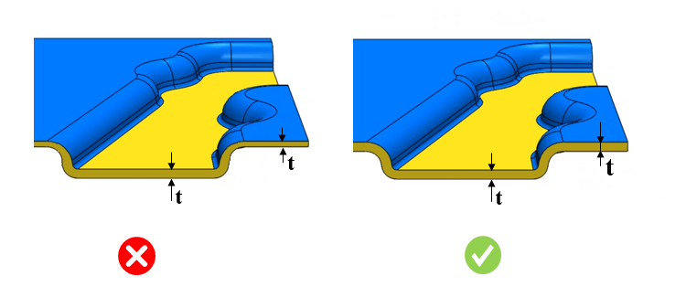

板金成形（Sheet Metal Forming）では、材料のしわを防ぐために、設計者は最小板厚を確保する必要があります。
板金成形プロセスでは、圧縮ひずみによって材料同士が押し付けられ、重なり合うようになります。厚い材料は薄い材料よりも圧縮力に対して抵抗しやすいため、薄い材料はしわが発生しやすくなります。
板金成形材料とその延性は、破断することなく引張状態での変形を保持できることを保証します。
特定材料に対する最小板厚は、構成で設定された値以上である必要があります。
ユーザーは Map Material から加工材料（fabrication material）を構成できます。ルールを実行する前に、入力選択（Input Selection）ダイアログボックスで、部品に対して表示される加工材料のリストから任意の材料を選択してください。
必要に応じて、デフォルトで構成されている値を編集できます。
ルールUIでは、材料リストは Materials Database から読み込まれます。ユーザーは材料と、それに関連付けられた値を構成できます。材料グループ内では、材料グレードはアルファベット順に並べ替えられます。材料グループが選択されている場合、DFMProは材料グループ全体で一貫した比率を維持しながら解析を進めます。

ここでは、
t = 板金の板厚
注記:
曲げ部の測定において、板厚測定に使用されるテセレーション（tessellation）により、板厚にわずかなばらつきが観察されました。この変化は、平坦な平面よりも形状近似の影響が大きい曲面で特に顕著です。